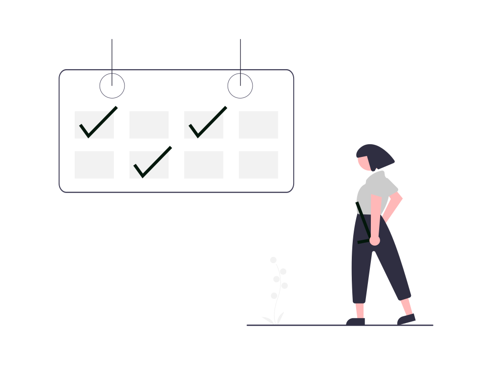
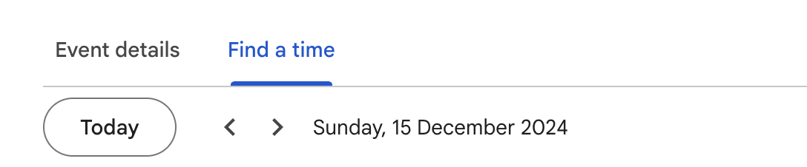

Un instrument foarte valoros pentru cabinete individuale de avocați sau societăți comerciale juridice de orice dimensiuni este Google Calendar. Fie că alegeți varianta gratuită sau optați pentru un abonament Google Workspace, Google Calendar oferă un mod organizat și colaborativ de a structura timpul de lucru, de a gestiona eficient întâlnirile, termenele limită și sarcinile zilnice. Pentru utilizatorii avansați din domeniul juridic, funcțiile Google Calendar pot fi automatizate prin unelte precum Zapier sau Relay.app și pot face o diferență vizibilă între productivitate și pierderea timpului pe sarcini administrative.

Pentru un avocat, timpul este cel mai prețios aliat. Fiecare oră poate acoperi o sarcină esențială - o pledoarie bine construită, o întâlnire decisivă sau un termen limită respectat. În tumultul unei zile de lucru timpul este o resursă vitală, iar organizarea acestuia - arta supremă. În practică, un calendar digital devine mai mult decât un instrument online - devine partenerul tău de încredere, cel care îți păstrează echilibrul între carieră și viața personală.
Iată o parte din funcțiile pe care le poți folosi în Google Calendar și nu numai (Microsoft Outlook Calendar, Apple Calendar (iCloud), Zoho Calendar, Yahoo Calendar, Teamup Calendar, Proton Calendar, etc.) pentru a-ți îmbunătăți productivitatea:
1. Creează calendare dedicate pentru diferite aspecte ale activității juridice
Pentru avocați, un singur calendar poate deveni rapid aglomerat și dezorganizat - mai ales când activitățile sunt în diverse domenii de activitate sau pentru diferiți clienți. Google Calendar permite crearea de calendare multiple, ceea ce înseamnă că poți avea un calendar pentru muncă, altul pentru termenele din instanță și unul pentru viața personală.
Dacă lucrezi cu alți avocați, o altă modalitate este de a crea un calendar nou pentru fiecare client ca să poți trimite acel calendar tuturor membrilor echipei care lucrează pentru acel client.
În acel calendar se pot adăuga evenimente specifice acelui client, de ex. termene, interogări, percheziții, întâlniri etc., și fiecare membru poate avea permisiuni distincte, ceea ce înseamnă că unii pot adăuga evenimente în calendar, alții doar le pot vedea - în funcție de setări.
Atribuind o culoare distinctă fiecărui calendar poți identifica rapid ce tip de activitate urmează și, astfel, să te organizezi mai eficient, făcând o distincție clară între evenimente.
2. Adaugă invitați la evenimente
Pentru fiecare întâlnire programată, Google Calendar permite adăugarea participanților prin e-mail. Astfel, toți invitații vor primi notificări înainte de întâlnire și vor avea opțiunea de a confirma sau refuza participarea direct de pe e-mail, economisind timp cu confirmările pentru fiecare meeting. Orice modificare făcută în calendar va fi notificată automat către toți invitații, fie că sunt colegi avocați sau clienți.
3. Adaugă documente relevante la evenimente
Folosește cu încredere funcția de atașare a documentelor pentru că este ideală pentru întâlniri. De exemplu, dacă organizezi o întâlnire de consultanță pentru un dosar cu un anume client, poți atașa documentele relevante pentru ca toți cei prezenți să le acceseze direct din Calendar, fără a mai fi necesar să le caute în foldere sau în arhiva personală.
4. Integrarea locației întâlnirii prin Google Maps
Pentru avocații care se întâlnesc cu clienți în diverse locații, integrarea Google Maps în Google Calendar este un beneficiu major. Poți adăuga adresa locului de întâlnire și aceasta va fi afișată în Calendar cu o opțiune de accesare rapidă a hărții.
Aceasta este de ajutor mai ales pentru întâlnirile care au loc în locații noi, oferindu-le participanților informații precise despre locația următoarei întâlniri.
5. Găsește rapid un interval disponibil pentru întâlniri cu multipli membri
Cu funcția „Find a time”, poți vizualiza mai ușor toate angajamentele sau întâlnirile din Calendar și să eviți suprapunerile. Această funcție este foarte utilă când tu și colegii tăi aveți o agendă foarte încărcată și vrei să programezi o întâlnire cu unul sau mai mulți participanți deoarece îți permite să identifici cel mai convenabil interval pentru toată lumea. Și dacă ai acces la calendarul colegilor, poți găsi intervale comune pentru întâlniri de echipă, fără a parcurge manual programul fiecărui participant.

6. Setează intervale de întâlniri pentru consultanță sau întâlniri cu clienții
Intervalele pentru întâlniri reprezintă o funcție utilă pentru avocații care au consultații regulate cu clienții. Prin această funcție, poți defini perioade de timp în care ești disponibil pentru o întâlnire, iar clienții sau colegii își pot rezerva o întâlnire în intervalele respective. Această metodă poate fi ușor integrată pe propriul website (vezi exemplul de pe website-ul nostru), le oferă clienților o experiență de programare eficientă și economisește timpul pierdut cu confirmările și reprogramările.

7. Activează orele de lucru
Pentru avocații care au un program de lucru mai neconvențional, funcția de ore de lucru este deosebit de utilă. Această setare permite setarea unui interval de ore în care ești disponibil pentru întâlniri.
Astfel, colegii și clienții sunt alertați automat dacă încearcă să programeze o întâlnire în afara orelor tale de lucru. Această funcționalitate îți protejează timpul și permite o comunicare clară a disponibilității.
8. Folosește notificările pe mobil sau desktop pentru a nu pierde întâlnirile importante
Google Calendar oferă notificări prin aplicațiile native de mobile (iOS/Android) sau desktop (macOS/Windows), ideale pentru cei care lucrează frecvent la această aplicație. Notificările native sunt mai discrete și îți permit să rămâi la curent cu întâlnirile importante fără a întrerupe activitatea curentă sau când ești în deplasări.
9. Integrarea cu alte aplicații
Avocații care doresc să fie mai eficienți pot beneficia de automatizări inteligente, reducând munca manuală și minimizând riscul de erori. Google Calendar se poate sincroniza cu alte instrumente esențiale, cum ar fi:
- Gmail: pentru a crea automat evenimente din e-mailuri importante.
- Google Meet: pentru întâlniri virtuale.
- Aplicații de management al proiectelor precum Trello sau Asana.
- Aplicații terțe specifice pentru automatizări precum Zapier, Relay.app.
Concluzie
Un avocat bine organizat este un avocat care are timp pentru el însuși. Cu ajutorul unui calendar digital precum Google Calendar poți transforma haosul unei zile aglomerate la muncă într-o simfonie de colaborare și zâmbete. Dacă vrei să mergi dincolo de simpla utilizare a Google Calendar, echipa noastră de la SOLON este aici să te ajute prin soluțiile personalizate de digitalizare pentru avocați, inclusiv integrarea și automatizarea Google Calendar în activitatea ta profesională.
Contactează-ne ca să vezi cum îți putem optimiza activitatea profesională. Ia controlul asupra timpului tău și lasă-l să lucreze în favoarea ta!
Începe astăzi!